Start Here
Input, output and storage
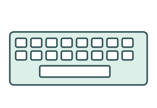
Input
Captures data and instructions.

Computer system
Processes data and instructions.
Output
Presents results.
↕ Read and write
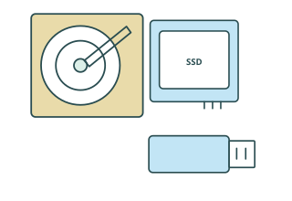
Storage
Keeps data for future use.
By the end: identify device roles, choose hardware for a user, compare storage technologies, and explain HDD fragmentation.
Input
What is data capture?
User / environment
Input device
Computer system
From the real world
Input captures data, instructions, actions or signals and converts them into data the computer can process.
A concrete example
Your voice makes sound waves. A microphone captures them as a signal that the system can digitise.
Input
Text and commands
Text → keyboard
Type words, numbers and commands. Useful for essays, messages and program code.
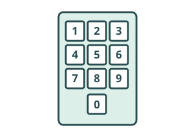
Numbers → keypad
Enter short numeric values or commands: a PIN, quantity or door-entry code.
Choose by the task: a keypad suits a short PIN; a full keyboard suits long passages of text.
Input
Position and selection
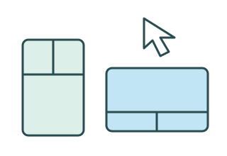
Mouse and trackpad
Relative pointing: movement changes the pointer’s position. Use it to select items and move objects.
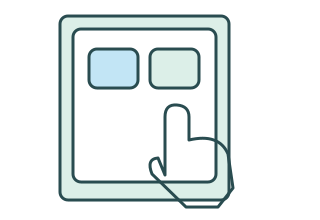
Touchscreen
Direct interaction: touch the content you want. The touch sensor is input; the display is output.
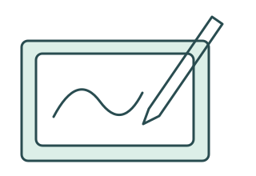
Stylus and graphics tablet
A pen supports precise drawing and positioning. A screen stylus is direct; a separate graphics tablet maps pen position to a display.
Input
Capturing the real world
Sound → microphone
Captures speech, music and other sounds.
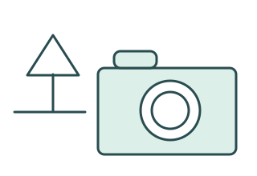
Images/video → camera
Captures light from a scene as image data.
Document → scanner
Captures a digital image of a physical document.
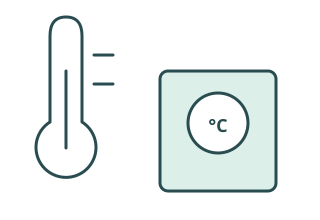
Temperature/light/movement → sensor
Measures a physical condition for monitoring or control.
Input
Choosing an input device
| Need | Suitable device | Reason |
|---|---|---|
| Digital artwork | Graphics tablet and stylus | Precise pen positioning for drawing |
| Long written report | Keyboard | Efficient entry of large amounts of text |
| Monitor a room | Temperature sensor | Automatically captures temperature readings |
| Digitise a paper document | Scanner | Captures the existing page as an image |
Also consider accuracy, speed, accessibility, environment, portability and user needs. A device suitable at a desk may be awkward with gloves or while moving.
Output
What is output?
Computer system
Output device
User / environment
Visual
Text, images, video and graphical interfaces.
Audio
Speech, music, notifications and alerts.
Physical/control
Documents, objects, movement or vibration.
Output is information or a control result produced by a computer and presented to a user, another physical system or the environment.
Output
Visual output
Monitor/display
Shows text, images, video and graphical interfaces for an individual or small group.
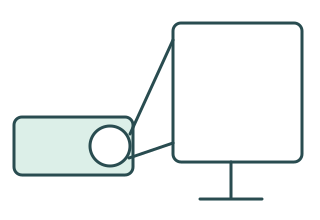
Projector
Projects an image onto a larger surface for a class or audience. Visibility depends on lighting and a suitable surface.
Output
Audio output
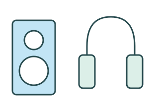
Speakers and headphones
Present speech, music and notifications. Speakers can reach a group; headphones allow more private listening.
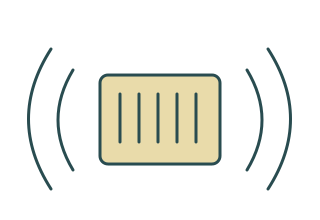
Alarms and buzzers
Draw attention to an event or hazard. Sound can be missed in noisy spaces or by someone with a hearing impairment.
Audio can help someone who cannot see a display. Choose volume, privacy and the environment to suit the user.
Output
Physical and control output
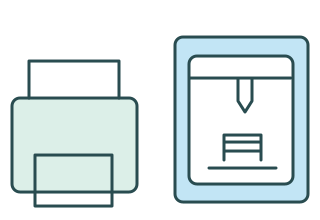
2D and 3D printers
A 2D printer produces a physical document. A 3D printer builds an object layer by layer.
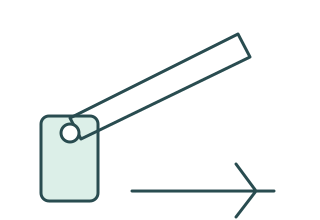
Motors and actuators
An actuator turns a control signal into physical action. A motor can open a barrier or move a mechanism.
Haptic feedback
A vibration motor provides tactile feedback, such as a phone notification.
Output is not always something you see on a screen.
Output
Output device comparison
| Category / devices | What it produces | Suitable scenario | Possible limitation |
|---|---|---|---|
| Visual: display, projector | Text, images and video | Show a lesson to a class | Lighting, visibility and visual access |
| Audio: speakers, headphones, buzzer | Speech, music or alerts | Read information aloud or signal an event | Noise, privacy and hearing access |
| Physical/control: printers, actuators | Documents, objects or movement | Print a ticket or open a barrier | Consumables, time, moving parts or safety |
User Needs
Accessibility and assistive input/output
Visual impairment
Speakers, headphones or a refreshable Braille display can present information. A Braille embosser makes raised dots on paper.
Hearing impairment
Visual alerts on a display or haptic vibration can replace or accompany audible alerts.
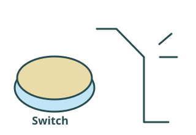
Limited motor control
Alternative keyboards, switches, sip-and-puff input and specialised pointing devices can reduce the need for fine hand movement.
Low vision
A suitably sized large display can help show enlarged text clearly. Hardware and settings should suit the individual.
A screen reader is software. It can send output to hardware such as speakers, headphones or a Braille display. Ask what the user needs; one solution does not suit everyone.
Storage
Storage technologies overview
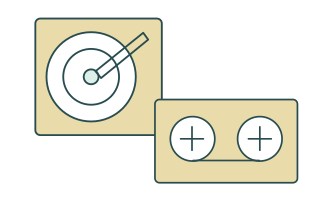
Magnetic
Internal/external HDDs and magnetic tape.
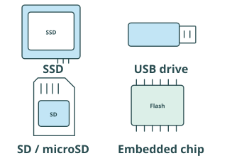
Flash
SSDs, USB drives, SD/microSD cards and built-in mobile storage.
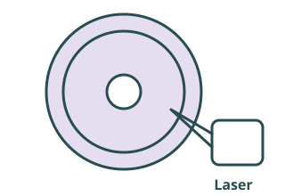
Optical
CD, DVD and Blu-ray discs.
These are non-volatile technologies: they retain stored data when power is removed.
Magnetic Storage
Magnetic storage
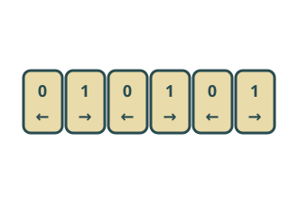
Magnetic states store data
Small areas of magnetic material represent data. Those states remain when the power is off.
Two common forms
HDDs use coated spinning platters; magnetic tape uses a coated strip inside a cartridge.
Magnetic Storage
How an HDD stores data
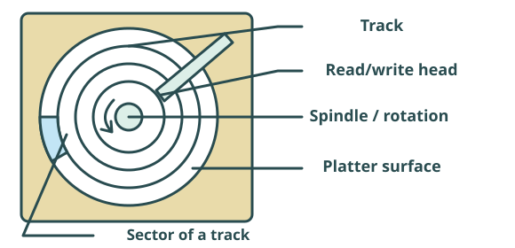
Platters spin around a spindle
The head moves to the required track
Data is read or written magnetically
Tracks are circular paths; sectors divide tracks into smaller storage areas. The read/write head accesses the magnetic surface.
Magnetic Storage
Why HDD access takes time
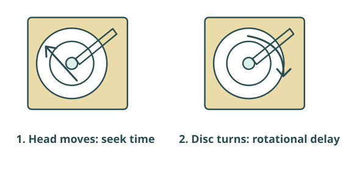
Seek time
Time for the head to move to the required track.
Rotational delay
Wait for the required sector to rotate under the head. Spindle speed is how fast the platters rotate; a higher speed generally reduces this average wait.
Transfer rate and cache
Transfer rate is how quickly data is read/written once accessed. Cache temporarily holds data and can help some requests; it does not remove all mechanical delays.
Magnetic Storage
Magnetic tape

Stored along a strip
Tape stores data magnetically and retains it without power. A drive winds the tape to reach the needed data.
Backup and archive
Often offers very high capacity and low media cost for large backups or long-term archives. The tape drive itself can be expensive.
Earlier blocks
Wind along the tape
Required blocks
Sequential access: reaching a random file can take time. Tape suits large backup/archive jobs better than frequent retrieval of individual files.
Flash Storage
How flash storage works
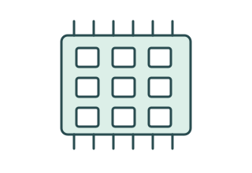
Electronic memory cells
Flash stores data electronically, using charge in memory cells. It is non-volatile and has no moving mechanical parts.

Same technology, several forms
An SSD is a flash storage device. Flash also appears in USB drives, memory cards and built-in phone/tablet storage.
Flash Storage
Flash storage devices
Where it appears
SSDs for system drives; USB drives for file transfer; SD/microSD cards for cameras and other portable devices; embedded storage in phones.
Common strengths
Fast random access (reaching individual locations directly), quiet operation, typically low power use, compactness and resistance to physical shock.
Trade-offs
Cost per unit of storage can be higher than HDDs. Cells have finite write endurance. Shock resistance does not mean indestructible or immune to data loss.
Optical Storage
Optical storage
Read using a laser
CD, DVD and Blu-ray are removable discs read by a laser in a compatible drive. Some media can be recorded once or rewritten.
Useful in the right setting
Discs are relatively inexpensive and can suit physical distribution or some archive needs. They generally offer lower capacity and slower access than modern HDD/SSD solutions.
Check disc/drive compatibility and handling: scratches can affect reading, and an archive still needs suitable media, storage conditions and a way to read it later.
Compare Storage
Comparing storage technologies
| Technology / examples | Access and speed | Capacity and cost | Handling and power | Suitable uses |
|---|---|---|---|---|
| Magnetic: HDD, tape | HDD: mechanical random access. Tape: sequential; slow to locate files. | Often high capacity with low cost per unit; tape drives add cost. | HDDs have moving parts. Tape cartridges are removable and need no power while stored. | HDD: large working stores. Tape: bulk backup/archive. |
| Flash: SSD, USB, memory card | Fast electronic random access; devices vary. | Many capacities; often higher cost per unit than HDD. | Compact, shock-resistant, typically low active power; finite write endurance. | Responsive system drives and portable storage. |
| Optical: CD, DVD, Blu-ray | Laser reading; generally slower than HDD/SSD. | Typically lower capacity; inexpensive individual discs. | Removable; vulnerable to scratches. Drive needs power; stored discs do not. | Physical distribution and some archive requirements. |
There is no universal winner. Speed, capacity, cost, durability, portability and access pattern depend on the particular device and workload.
Apply
Choosing storage for a scenario
Device choice → feature → scenario. Choose an answer, then check the reason. These are reasonable choices for the stated needs, not universal rules.
A desktop needs responsive everyday applications.
An organisation archives very large backups and rarely retrieves individual files.
Transfer a small set of files using a portable removable device.
A desktop needs lots of local capacity on a limited budget.
A customer specifically requires a physical disc readable in their compatible optical drive.
Fragmentation
What is fragmentation?
Files occupy blocks of space. Saving and deleting files can leave gaps.
1. Store several files
A, B and C each occupy neighbouring blocks.
A1
A2
B1
B2
C1
C2
–
–
2. Delete file B → gaps appear
The blocks used by B become free.
A1
A2
–
–
C1
C2
–
–
3. Save a larger file D
D needs four blocks. It may use two separated gaps.
A1
A2
D1
D2
C1
C2
D3
D4
Fragmentation: a file’s data is stored in non-contiguous (separated) locations. Letters identify files; numbers show their block order; “–” means free space.
Fragmentation
Why fragmentation affects an HDD
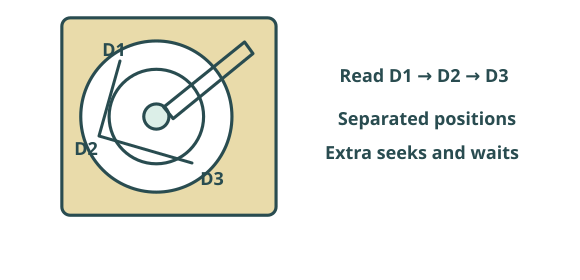
Read one part
Move head to another track
Wait and read next part
A fragmented file can require extra mechanical head movement and rotational waits. More seeks increase access time, especially when many small pieces are scattered.
Fragmentation
Defragmentation
Before: separated file data
Reading D can require jumps between separated areas.
A1
A2
D1
D2
C1
C2
D3
D4
After: neighbouring file data
Moving blocks together can reduce unnecessary HDD head movement.
A1
A2
C1
C2
D1
D2
D3
D4
Defragmentation reorganises file blocks so related data is closer together. It can improve access on a fragmented HDD; it does not increase the drive’s physical capacity.
Disk defragmenters are utility software. Utility software is covered in more detail in a later lesson.
Fragmentation
Should you defragment an SSD?
Traditional HDD-style defragmentation? No.
An SSD accesses cells electronically, with no moving head and no mechanical seek delay.
Why the HDD reasoning does not apply
Files on an SSD can still be fragmented. But bringing their blocks together does not provide the same head-movement benefit, and traditional defragmentation creates unnecessary writes.
Keep the distinction clear: reorganising a fragmented HDD can reduce mechanical delays; do not apply that maintenance rule to an SSD.
Exam Traps
Common exam mistakes
Confusing input and output
A touchscreen combines touch input and visual output. Identify which role the question asks about.
Calling software an output device
A screen reader is software. Speakers, headphones and Braille displays are output hardware.
Choosing without a reason
Weak: “An SSD is better.” Better: “An SSD’s faster random access improves system responsiveness.”
Assuming one technology always wins
Compare capacity, speed, cost, durability, portability and intended use.
Confusing RAM with storage
RAM is temporary working memory. The storage technologies here keep data without power.
Defragmenting SSDs
Traditional defragmentation addresses HDD mechanical movement; SSDs do not have that penalty.
Quiz
Check your understanding
Answer all 12 questions, then check your score. Your choices and best score save in this browser.
Exam-Style Practice
Try longer answers like the ones used in written papers
These questions need fuller explanations than the quick quiz. Type your answers straight into the page, then compare your ideas with the answer guide.
Draft answers save automatically in this browser.
Question 1
Explain why a touchscreen may be more suitable than a keyboard and mouse in a public information kiosk. Suggest an alternative output device for a visitor who cannot see its display.
Show answer guide
- A touchscreen allows direct interaction with on-screen choices.
- It can make short selection tasks quicker than typing.
- It reduces the number of separate devices needed.
- Headphones or a Braille display could present information to a visitor who cannot see the screen, with suitable software.
Question 2
A media student needs hardware for editing large video files while travelling between college and home. Discuss suitable storage choices for this situation.
Show answer guide
- An SSD is a strong choice because it offers faster access and no moving parts.
- No moving parts make it safer to carry while travelling.
- Capacity still matters because video files can be very large.
- A large HDD may cost less per gigabyte, but typically has slower random access and is more vulnerable to mechanical shock.
- A removable flash drive may help with transfer but may not be ideal as the main working drive.
- The best answer balances portability, speed, and enough capacity for the project files.
Question 3
A small design studio stores large project files on an older HDD. Staff say that files take longer to open after months of saving, deleting, and editing projects. Analyse possible HDD performance reasons and suggest suitable improvements.
Show answer guide
- Large project files can be slow on an HDD because the drive has mechanical seek time and rotational delay.
- Data transfer rate affects how quickly large files are read once the drive reaches the data.
- Cache can help repeated access, but it cannot remove the limits of moving parts.
- Slow access alone does not prove fragmentation. Frequent saving, deleting, and editing can cause fragmentation, making the head move to several places.
- Defragmenting may improve HDD access if fragmentation is a problem.
- Moving active project files to an SSD could improve access time and responsiveness because SSDs use flash memory with no moving parts.
Question 4
An organisation needs large weekly backups kept for years, with infrequent retrieval. Explain why magnetic tape could suit this need and give one limitation.
Show answer guide
High capacity and relatively low media cost suit large long-term backups. Sequential access suits bulk jobs, but locating an individual file can take time. A compatible tape drive adds cost.